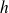
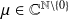

Sujet MP 2015-15 : Indicatrice d'Euler-Arithmétique / corrigé complet
Le sujet est téléchargeable ci-dessous.
Le corrigé des questions de mathématiques est de François Sauvageot ! Merci à lui.
Cyclicité
Soit un groupe et .
Question
a. Montrer que l'application de vers est un morphisme du groupe vers le groupe .
C'est du cours. On a .
Question
b. Donner une condition nécessaire et suffisante portant sur
pour que
 engendre
.
engendre
.
L'élément est
est un générateur de
si et seulement si
est surjective.
Question
c. Que peut-on dire sur
si
n'est pas injective ? et si de plus
engendre
?
L'élément
est d'ordre fini si et seulement si
n'est pas injective. Si
est
un générateur de
d'ordre fini, alors
est le groupe cyclique engendré par
.
2. Indicatrice d'Euler
On rappelle que l'indicatrice d'Euler de
 , notée
, est le nombre d'entiers
premiers avec
.
, notée
, est le nombre d'entiers
premiers avec
.
Question
a. Calculer
,
et
pour
 premier.
premier.
Par définition, on a
;
et
pour
premier.
Question
b. Expliquer pourquoi l'algorithme suivant fonctionne en exhibant un invariant de boucle, c'est à dire une propriété qui est vérifiée à chaque étape de la boucle principale.
def premAvec(n):
"""Renvoie la liste des entiers 0 <= k < n premiers avec n"""if n == 1:
return [0]
table = [0] + [1 for i in range(1, n)]
# objectif final : table[i] == 1 ssi pgcd(n, i) == 1for i in range(2, n // 2 + 1):
if table[i] == 1 and n % i == 0:
for k in range(1, (n - 1) // i + 1):
table[k * i] = 0
return [i for i in range(1, n) if table[i] == 1]
Contrairement au script proposé dans le sujet je modifie les deux premières lignes du corps de la fonction pour ne pas renvoyer 0 comme étant premier avec 1.
def premAvec(n):
"""Renvoie la liste des entiers 0 <= k < n premiers avec n"""if n == 1:
return []table = [0] + [1 for i in range(1, n)]
# objectif final : table[i] == 1 ssi pgcd(n, i) == 1for i in range(2, n // 2 + 1):
if table[i] == 1 and n % i == 0:
for k in range(1, (n - 1) // i + 1):
table[k * i] = 0
return [i for i in range(1, n) if table[i] == 1]
table est constitué de 0 et de 1 qui ont valeur logique False et True.
On aurait pu donc écrire la fonction sous la forme suivante.
def prem_Avec(n):
"""Renvoie la liste des entiers 0 <= k < n premiers avec n"""if n == 1:
return []table = [False] + [True for i in range(1, n)]
# objectif final : table[i] == True ssi pgcd(n, i) == 1for i in range(2, n // 2 + 1):
if table[i] and n % i == 0:
for k in range(1, (n - 1) // i + 1):
table[k * i] = False
return [i for i in range(1, n) if table[i]]
L'invariant est quasiment fourni dans la postcondition précisée en commentaire dans la fonction.
« P(i) : table[k] = 1 si pgcd(n, k) = 1 pour tout k < i »
Il est à placer en entrée de la boucle for.
Question
c. Écrire une fonction Python phi(n) qui retourne l'indicatrice d'Euler de l'entier
représenté par l'objet Python nommé n en utilisant la fonction premAvec.
def phi(n):
return(len(prem_Avec(n)))
Dur dur ! !
Question
d. Calculer et . Que conjecturez-vous ? Testez votre conjecture avec d'autres exemples.
In [16]: phi(1024 * 81)
Out[16]: 27648
In [17]: phi(1024) * phi(81)
Out[17]: 27648
On peut conjecturer que .
Question
e. Démontrer cette conjecture.
Il résulte du théorème des restes chinois que si
et
sont premiers entre eux alors
, l'isomorphisme étant un isomorphisme d'anneaux. Il induit alors une bijection sur le groupe des inversibles de chacun des anneaux. Dans le second cas, puisqu'on a affaire à un anneau produit, les inversibles en sont le groupe produit. Par
cardinalité on en déduit .
Convolution
On note
 l'application habituelle sur l'espace
l'application habituelle sur l'espace
 des applications de
des applications de
 vers
. De
vers
. De
plus, pour deux applications
 et
de
, on définit la convolée de
et
par la formule :
et
de
, on définit la convolée de
et
par la formule :

Question
a. Montrer, en rappelant oralement tous les points mais ne détaillant que ceux qui sont non-triviaux, que est un anneau commutatif et préciser l'élément neutre de qu'on note .
En tant que groupe produit, on a affaire à un groupe additif. La loi
 est en fait un
est en fait un
bi-magma. Il est commutatif en ré-indexant la somme par
 et en notant que si
et en notant que si
induit une bijection de l'ensemble des diviseurs de
dans lui-même. La distributivité à gauche résulte de la distributivité dans
et, par commutativité, celle à droite en résulte. La fonction caractéristique de
est un élément neutre à gauche par définition, et donc aussi à droite par commutativité. Enfin il reste à démontrer l'associativité. Pour cela on remarque qu'on a, pour
,
et

dans
et
dans
Question
b. On notera l'application constante sur égale à 1 et l'élément de défini par . On admet que .
On définit la fonction

ainsi : si
est divisible par un carré de nombre premier,
, sinon
, où
 est le nombre de diviseurs premiers de
.
est le nombre de diviseurs premiers de
.
Démontrer que .
Si
est un entier supérieur à 2 possédant exactement
diviseurs premiers distincts,
on a
et on en déduit
, en notant
l'élément neutre, et aussi que
 est régulier. Or on a
est régulier. Or on a
et donc
 , par régularité de
.
, par régularité de
.